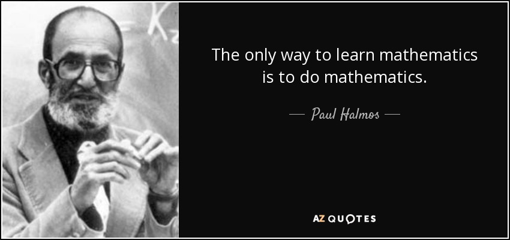
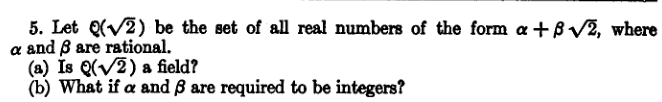
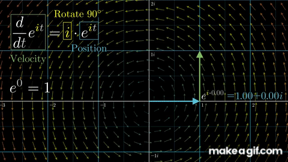
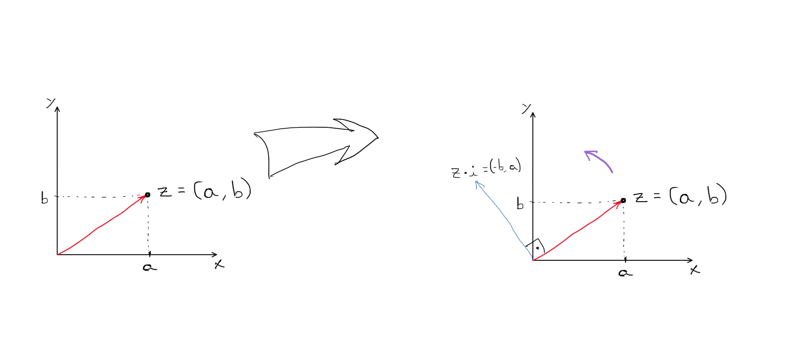
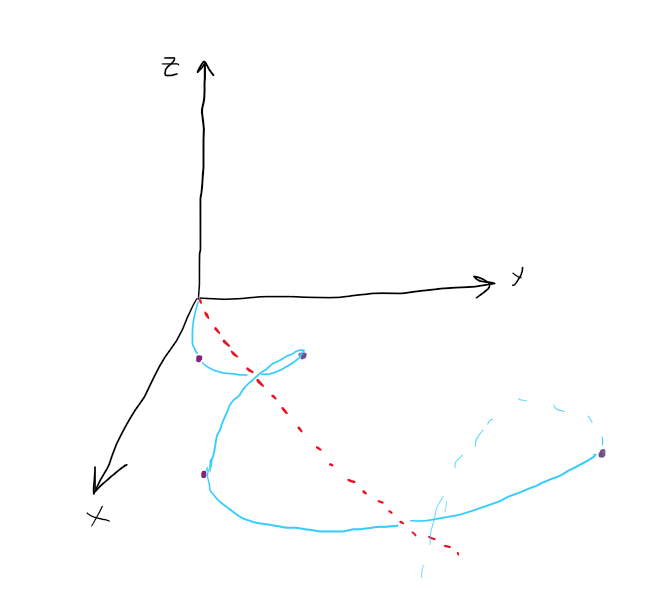

Contexto
Eu estava procurando um livro de álgebra linear pra substituir um livro que eu tentei usar várias vezes, mas nunca passei do capítulo 4 dele. Dai eu encontrei um livro chamado "Finite-Dimensional Vector Spaces" de um cara que é bem famoso na área, chamado Paul R. Halmos.

Procurando a foto dele agora, acabei achando essa citação dele que tem tudo a haver com o que aconteceu.
No livro, ele explica que incluiu exercícios que são declarativos e que para esses exercícios o leitor tem que descobrir se a afirmação é verdade ou não e então formular uma explicação que comprove a descoberta. Também precisa considerar casos não citados, pra descobrir quando e onde é que aquele afirmação funcionaria, se é que funciona em algum caso.

Todas as ideias surgiram enquanto eu pensava sobre um exercício desse livro do Halmos. O exercício é esse:
Como disse na mensagem, uma das coisas que me impactaram foi a reunião simultanea de várias coisas que vi nos últimos anos. Se eu não tivesse visto qualquer uma delas, ou se alguma delas não tivesse me marcado ao ponto de eu lembrar dela, certamente não teria seguido o exercício do livro até esse ponto.
O que descobri
Números complexos
Há pouco tempo atrás eu vi esse vídeo abaixo que mostra como construir os números complexos completamente a partir dos reais, sem precisar definir a unidade imaginário como $i^{2} = -1$.
Para entender isso, vamos escrever a formulação mais comum dos números complexos. Normalmente, definimos os complexos como o conjunto $\mathbb{C} =\{ a+bi $ $ ; $ $a, b \in\mathbb{R}\}$.
O vídeo começa mostrando o que é que a unidade imaginária faz quando a gente múltiplica um número por ela. Por exemplo, se a gente multiplicar $1$ por $i$ temos $i$, ou seja, é como se o $i$ rotacionasse o número, que nesse exemplo é o 1, no plano de Argand-Gauss. Isso vale para qualquer número, se multiplicar o número $z = a+bi$ por $i$ temos $(a+bi)\cdot i=-b+ai$ que se representarmos como um ponto no plano veremos que é o ponto $(-b, a)$ que se trata justamente do ponto para o qual a rotação de $(a,b)$ em 90° no sentido anti-horário aponta. Essa identificação rápida de uma rotação em 90° no plano olhando apenas para as coordenadas eu tinha visto no livro de geometria analítica do Elon Lages Lima, mesmo autor do livro que eu "larguei" para ler o livro do Halmos.
Essa propriedade de rotacionar coisas no plano nós faz pensar em transformações lineares. Particularmente, a transformação linear que rotaciona um vetor $v$ em um ângulo $\theta$ no sentido anti-horário é $$R(\theta)=\begin{pmatrix} \cos(\theta) & -\sin(\theta) \\ \sin(\theta) & \cos(\theta) \end{pmatrix} $$ ou seja, é como se $$i = R\left(\frac{\pi}{2}\right)=\begin{pmatrix} \cos(\frac{\pi}{2}) & -\sin(\frac{\pi}{2}) \\ \sin(\frac{\pi}{2}) & \cos(\frac{\pi}{2}) \end{pmatrix}=\begin{pmatrix} 0 & -1 \\ 1 & 0 \end{pmatrix}$$ Assim, se o número $z=a+bi$ for escrito como um vetor $\overrightarrow{z} = \begin{pmatrix} a \\ b \end{pmatrix}$ quando multiplicamos ele por $i=\begin{pmatrix} 0 & -1 \\ 1 & 0 \end{pmatrix}$ temos $$\begin{pmatrix} 0 & -1 \\ 1 & 0 \end{pmatrix} \cdot \begin{pmatrix} a \\ b \end{pmatrix} =\begin{pmatrix} -b \\ a \end{pmatrix}$$
O gif abaixo foi o melhor que eu achei para mostrar o número rotacionando, mas ele não está tratando extamente disso que a gente tá falando aqui, é somento uma animação que mostra o que está acontecendo. Pelo menos vai servir pra você entender o que eu quero dizer quando eu falo "rotacionar", é só ignorar o texto.
 O conjunto $\mathbb{Q}(\sqrt{2})$
O conjunto $\mathbb{Q}(\sqrt{2})$ foi definido no livro como {$\alpha + \beta \sqrt{2} $ $; $ $\alpha, $ $ \beta \in \mathbb{Q} $}. Essa definição é extremamente parecida com a dos números complexos.
Basicamente, um elemento $q$ de $\mathbb{Q}(\sqrt{2})$ é dado por um par de números racionais $\alpha, $ $ \beta \in \mathbb{Q}$ com um número irracional $\sqrt{2}$. Enquanto que os números complexos são dados por um par de números reais $\alpha, $ $ \beta \in \mathbb{R}$ com um número imaginário $i$.
Essa semelhança me instigou a construir uma representação bidimensional dos elementos de $\mathbb{Q}(\sqrt{2})$ e explorar as várias propriedades deles como módulo, conjugado, inverso multiplicativo etc. Basicamente eu resolvi o exercício e depois do exercício e das propriedades eu me perguntei se o $\sqrt{2}$, assim como o $i$, poderia estar relacionado com alguma transformação linear. Essa ideia de relacionar o $\sqrt{2}$ com uma transformação foi muito empolgante pra mim.
Eu comecei pensando e respeito no ônibus e cheguei na conclusão errada kk, eu achei que a cada vez que eu multiplicasse um número $q \in \mathbb{Q}(\sqrt{2})$, por exemplo, $q = \alpha + \beta \sqrt{2} = \begin{pmatrix}\alpha \\ \beta \end{pmatrix}$ por $\sqrt{2}$ teriamos, assim como em $\mathbb{C}$, uma rotação de 90°, porém com uma das coordenadas esticada em 2 unidades. Pensei isso porque se nós multiplicarmos teremos o seguinte: $$ q\cdot \sqrt{2}=(\alpha + \beta \sqrt{2})\cdot \sqrt{2}=2\beta +\alpha \sqrt{2} = \begin{pmatrix}2\beta \\ \alpha \end{pmatrix} $$ Como as coordenadas foram trocadas eu pensei na hora que tinha acontecido algo parecido com os complexos e acabei não percebendo que a coordenada x está positiva e que uma rotação de $90°$ é impossível, porque apenas um dos eixos esticou. Fiquei feliz pra caramba e na hora do almoço eu fui anotar isso tudo no papel e foi aí que eu vi o erro na minha interpretação geométrica.
Nesse ponto eu desenhei tudo o que estava pensando e percebi, mesmo que apenas de modo intuitivo, que o $\sqrt{2}$ realmente pode ser visto como uma transformação linear, mas a transformação não girava o número mais sim o próprio espaço! É como se o $\sqrt{2}$ virasse o plano de cabeça para baixo e depois ainda esticasse o eixo y - eixo esse que agora estava na posição do x - em duas unidades, isto é, de modo que o comprimento em y se torne duas vezes maior do que estava antes de multiplicar por $\sqrt{2}$.
A interpretação disso está no desenho abaixo:

Se mantermos os eixos fixos e olharmos apenas para o vetor, a gente vai ver isso para cada vez que aplicarmos $\sqrt{2}$ ao número $q$:

Essa outra visualização nos mostra que todos os valores de $q\cdot \left(\sqrt{2}\right)^{k}$ para $k \in \mathbb{N}$ são pontos da interseção de uma inspiral sobre a superfície de um cone que tem como eixo a bissetriz dos quadrantes ímpares com o plano $xy$.
Eu não sei que inspiral é essa e só percebi isso agora enquanto estou escrevendo isso. Vou tentar descobrir depois.
Agora que temos a visualização e a intuição do que acontece, precisamos saber que transformação é essa que faz isso que o $\sqrt{2}$ faz. No almoço, eu tive dificuldade pra descobrir que transformação é, porque eu não lembrava bem de como fazer isso, mas lembrava desse vídeo do 3blue1brown em que ele explora essa tradução entre transformação e a matrizes.
Nesse vídeo percebi uma propriedade bem óbvia das transformações que deriva diretamente da definição de uma trnasformação linear.
Uma transformação linear é uma aplicação $T:E_{a} \rightarrow E_{b}$ tal que, para todo $v$ e $u \in E_{a}$ e $\alpha$ escalar, temos $$T(u+v)=T(u)+T(v)$$ $$ T(\alpha \cdot v) = \alpha \cdot T(v)$$
Isso significa que para compreender 100% uma transformação precisamos apenar saber o que essa transformação faz com os vetores da base do espaço vetorial $E_{a}$. No nosso caso, vamos considerar $E_{a} = \mathbb{R}^{2}$. Vamos pensar em onde vão parar os vetores da base de $\mathbb{R}^{2}$ quando a gente aplicar a transformação...
Vamos começar com o vetor $î=\begin{pmatrix}1 \\ 0\end{pmatrix}$. Esse vetor escrito na forma como o conjunto $\mathbb{Q}(\sqrt{2})$ foi definido fica:$$ î = 1+0\cdot \sqrt{2}=1 $$ agora vamos multiplicar por $\sqrt{2}$: $$ 1\cdot \sqrt{2}=\sqrt{2} = 0 + 1\cdot \sqrt{2} = \begin{pmatrix} 0 \\ 1\end{pmatrix} $$ Pronto, descobrimos que $\sqrt{2} \cdot î = \begin{pmatrix} 0 \\ 1\end{pmatrix}$
Vamos ver o ele faz com o segundo vetor da base, $\hat{j} = \begin{pmatrix} 0 \\ 1\end{pmatrix} $, para isso vamos escrever $\hat{j}$ na forma algebrica: $$ \hat{j} = 0+1\cdot \sqrt{2}$$Portanto, $$ \hat{j}\cdot \sqrt{2} =0\cdot\sqrt{2} + \sqrt{2} \cdot \sqrt{2}=2=\begin{pmatrix} 2 \\ 0\end{pmatrix}$$
Pronto, agora sabemos que se pegarmos um vetor $v \in \mathbb{R}^{2}$, $v=\begin{pmatrix} a \\ b\end{pmatrix}=a\cdot î+b\cdot \hat{j}$, então, ao aplicarmos a transformação que queremos descobrir, devemos ter como resultado: $$ G(v)=G(a\cdot î+b\cdot \hat{j}) = G(a\cdot î)+G(b\cdot\hat{j})=a\cdot G(î)+b\cdot G(\hat{j})$$ $$ G(v)= a\cdot \begin{pmatrix} 0 \\ 1\end{pmatrix} + b\cdot \begin{pmatrix} 2 \\ 0\end{pmatrix}=\begin{pmatrix} 0 & 2 \\ 1 & 0\end{pmatrix} \cdot \begin{pmatrix} a \\ b\end{pmatrix}$$
Pronto! finalmente concluí o que eu queria. Encontrei a transformação que está intimamente ligada ao raiz de 2 dentro do conjunto $\mathbb{Q}(\sqrt{2})$
Com isso, agora somos capazes de representar os elementos de $\mathbb{Q}(\sqrt{2})$ de forma matricial. A demonstração do isomorfismo entre essas representações ainda é necessária, mas não deve ser difícil, só demorada mesmo, então n vou fazer nesse texto.
Representação de $\mathbb{Q}(\sqrt{2})$ em forma matricial
Associamos a unidade das abscissas a matriz unitária e a unidade das ordenadas a matriz que representa o $\sqrt{2}.$ $$ 1 \rightarrow \begin{pmatrix}1 & 0 \\ 0 & 1\end{pmatrix} $$ e $$ \sqrt{2} \rightarrow \begin{pmatrix} 0 & 2 \\ 1 & 0 \end{pmatrix}$$ Assim, $$ q = a + b\cdot \sqrt{2}= a \cdot \begin{pmatrix}1 & 0 \\ 0 & 1\end{pmatrix} + b \cdot \begin{pmatrix} 0 & 2 \\ 1 & 0 \end{pmatrix} = \begin{pmatrix} a & 2b \\ b & a \end{pmatrix}$$
Generalização
Essa forma matricial dos números de $\mathbb{Q}(\sqrt{2})$ é curiosamente semelhante a forma matricial dos números complexos. Vou escrever forma matricial dos complexos para compararmos. $$ 1 \rightarrow \begin{pmatrix}1 & 0 \\ 0 & 1\end{pmatrix} $$ $$ i \rightarrow \begin{pmatrix} 0 & -1 \\ 1 & 0 \end{pmatrix} $$
$$ z = a + bi= a \cdot \begin{pmatrix}1 & 0 \\ 0 & 1\end{pmatrix} + b \cdot \begin{pmatrix} 0 & -1 \\ 1 & 0 \end{pmatrix} = \begin{pmatrix} a & -b \\ b & a \end{pmatrix}$$
Agora perceba que o seguinte padrão parece estar presente aqui: em ambos os casos o elemento que multiplica o b na primeira linha é igual ao quadrado do número "especial". $$\begin{pmatrix} a & 2b \\ b & a \end{pmatrix} =\begin{pmatrix} a & (\sqrt{2})^{2}b \\ b & a \end{pmatrix}$$ e $$\begin{pmatrix} a & -b \\ b & a \end{pmatrix}= \begin{pmatrix} a & i^{2}b \\ b & a \end{pmatrix}$$
Isso sugere que, se $\eta = \xi^{2}$ então, um conjunto que é definido por $n=a+b\cdot \xi$ é equivalente a um com elementos escritos como $$n = \begin{pmatrix} a & \eta \cdot b \\ b & a \end{pmatrix}$$
Não provei, mas é uma conjectura que parece fazer sentido, porque é muita coincidência se não for verdade.
Concluo com a interpretação geométrica de $\begin{pmatrix} a & \eta \cdot b \\ b & a \end{pmatrix}$. Essa transformação leva o vetor $\begin{pmatrix} 1 \\ 0 \end{pmatrix}$ ao ponto $\begin{pmatrix} a \\ b \end{pmatrix}$ e o vetor $\begin{pmatrix} 0 \\ 1 \end{pmatrix}$ ao ponto $\begin{pmatrix} \eta \cdot b \\ a \end{pmatrix}$.
Conclusão
Cabou.